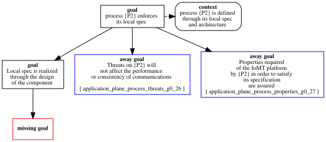

application_plane_process_g0_9
Pattern 'application_plane_process'
Process : application_plane:process = process('P2',[port(p,[],[])],[],[processor(x,[family(cpu),frequency('2GHz'),schedule(80)]),memory(z,[family(ram),size(5)])])
App_Spec : application_plane:specification = policy(iomt_spec1,[process('P1',[port(p,[],[])],[],[processor(x,[family(cpu),frequency('2GHz'),schedule(70)]),memory(z,[family(ram),size(1)])]),process('P2',[port(p,[],[])],[],[processor(x,[family(cpu),frequency('2GHz'),schedule(80)]),memory(z,[family(ram),size(5)])])],[object(o1,[],[memory(u,[family(ram),size(3)])]),object(o2,[],[memory(u,[family(ram),size(6)])])],[ipc_flow(p1p2,['P1',p],['P2',p],[],[])],[po_flow(p1o1,'P1',o1,[],[]),po_flow(p2o2,'P2',o2,[],[])],[specfilename('x.spec')],[deployment(not_same(['P1','P2']))])
GSN Representation

Error Log
pattern ref arguments mismatch